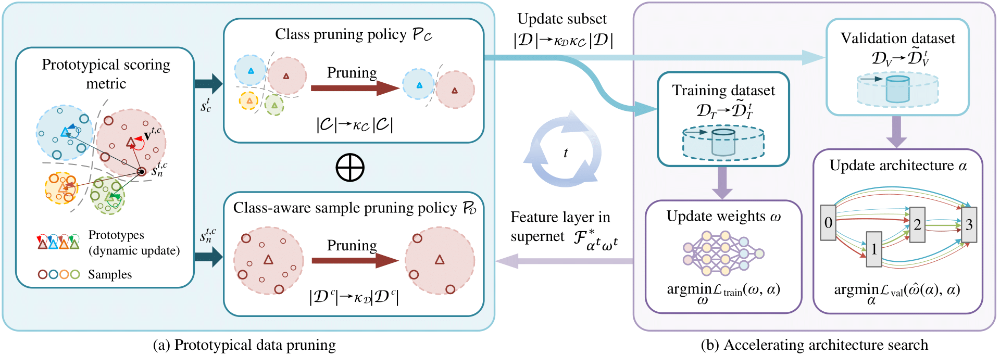
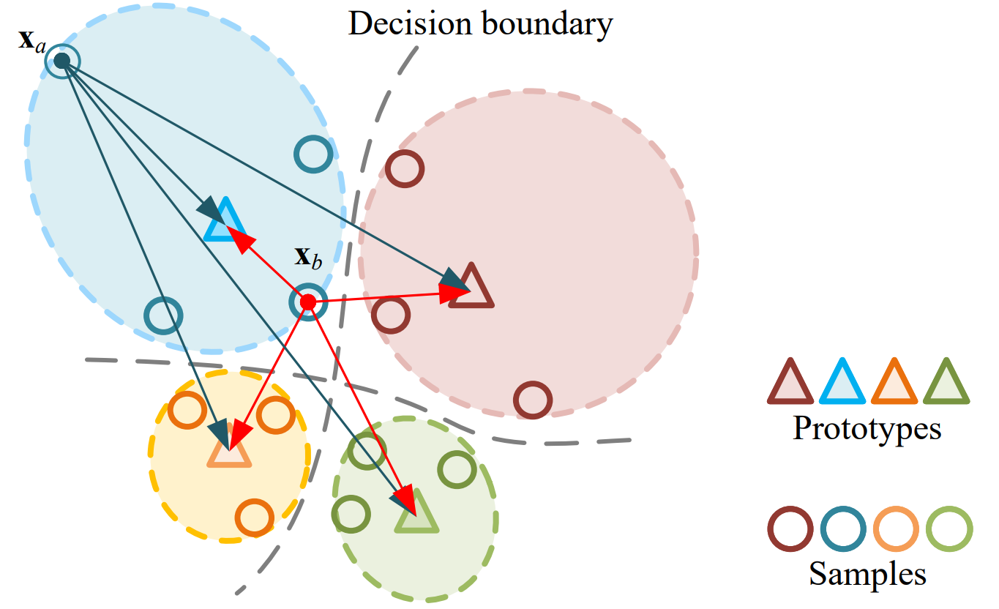

Method

Overview of ProtoNAS for accelerating neural architecture search: (a) In the prototypical data pruning, we introduce a novel scoring metric that is based on the distance between a sample's feature vectors output by a specific feature layer in the supernet $\mathcal{F}^*_{\alpha^t,\omega^t}$ and its corresponding class-specific prototype. The prototypes are dynamically updated throughout the search phase. The score of a sample is formulated as the prototypical distance and its running variance. We then propose an innovative prototypical class pruning policy $\mathcal{P}_\mathcal{C}$ that efficiently accelerate the search phase without compromising the overall performance of the searched architecture. In addition, a class-aware sample pruning policy $\mathcal{P}_\mathcal{D}$ is introduced according to the score of each sample. The sample pruning policy is able to maintain the sample distribution of the dataset, circumventing class bias after the pruning. (b) The proposed prototypical data pruning promises lossless searching acceleration with significant pruning rate.

Illustration of prototypical distance in the embedding space. Samples $\textbf{x}_b$ can be assigned with a larger prototypical distance than samples $\textbf{x}_a$, despite having a smaller Euclidean distance. Therefore, the employed prototypical distance facilitates more precise score assignments compared to alternative scoring metrics.